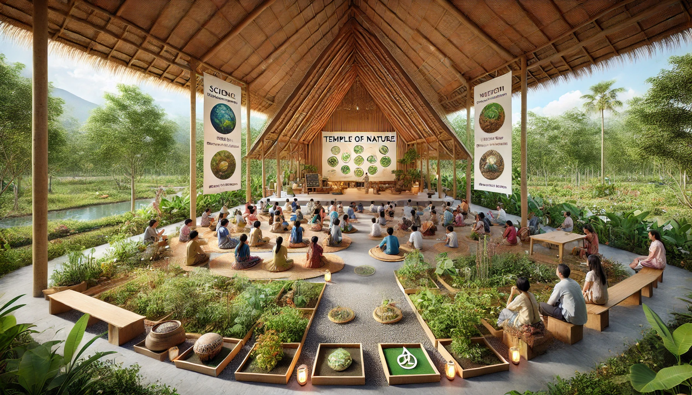

Nature Education (Pancha Bhoota Science)
Objective: Educate individuals on the five elements (earth, water, fire, air, and space) and their influence on human well-being.
Course Structure
- Understanding the Five Elements (Pancha Bhoota)
- Connection Between Elements & Human Physiology
- Practical Applications in Daily Life
- Earth-Based Healing (Earthing, Barefoot Walking Therapy)
- Water Purification & Conscious Usage Practices
- Fire & Light Therapy (Sun Gazing, Agnihotra Rituals)
- Air Purification & Aromatherapy
- Space & Sound Healing Techniques
Practical Sessions
- Meditation and nature immersion walks
- DIY herbal incense & aromatherapy making
- Fire rituals and breathwork techniques
